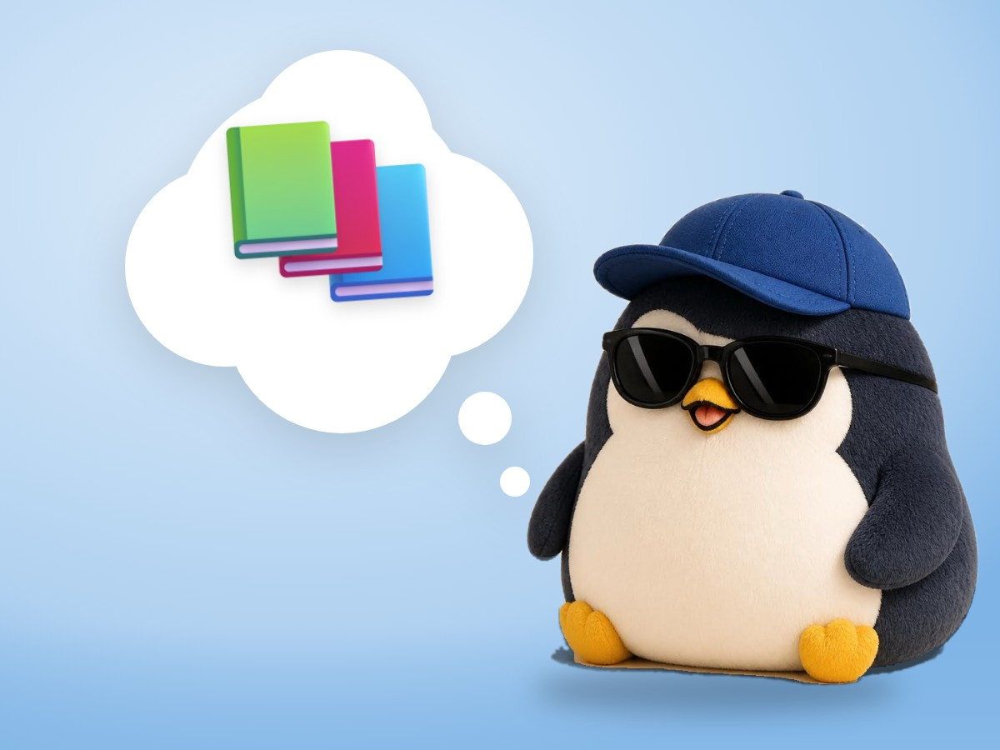

📝 DRAFT · 下書き — まだ本番に出していません · 下書き一覧
🐧 EVERYDAY LIFE⚡ 21 SEC
Your reading pile is not a bucket to empty, it is a river 🌊

Too Many Good
Your reading pile grows not because of too much useless information. It grows because there are too many things you want to read.
Not A Bucket
So think of the pile as a river, not a bucket to empty.
⚡ TRY IT
Bucket or river?
📕
📚 In the bucket: 0/10
🎣 Scooped: 0/3
New books keep coming. Try to empty the bucket!
Read, read, read…! 😰
😵 It overflows! You can never empty it.
Books float down the river. Tap the ones you like.
😌 The rest just flows by. That is fine.
🎣 You scooped 3 good ones. That is enough! 🎉
Just Scoop
It is enough to scoop up the one you like sometimes.
Library Calm
We do not panic at a library's unread books, because reading them all is not our job.
📚 I learned this from Oliver Burkeman's newsletter. Read the original (English)